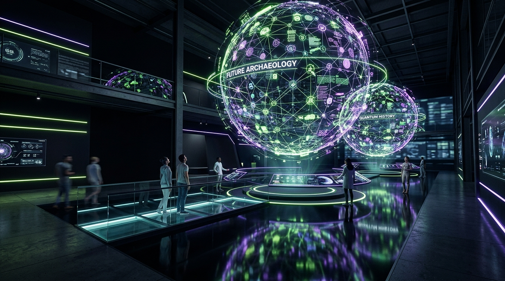
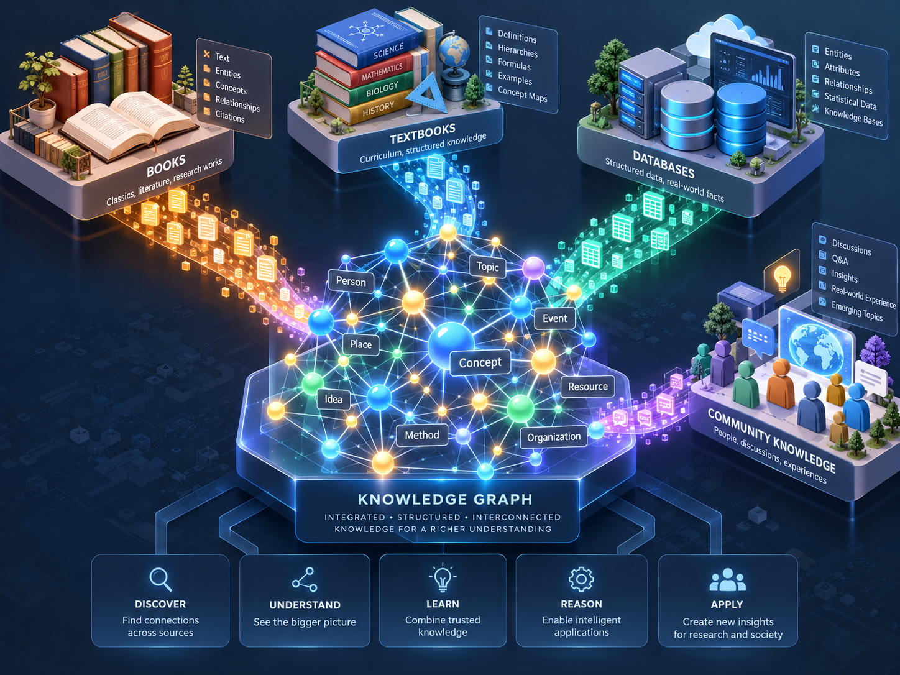
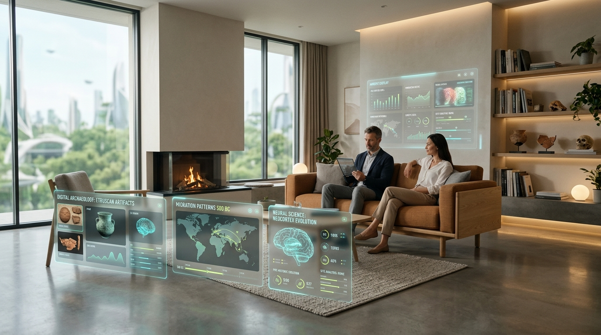

GRURU MUSEUM
พิพิธภัณฑ์ความรู้ดิจิทัลแนวคิด Future Archaeology ที่เปลี่ยนความรู้ซ่อนเร้นในอดีตให้กลายเป็น Interactive Knowledge Graph และเรื่องเล่าใหม่ที่คนรุ่นใหม่นำไปปรับใช้ในชีวิตประจำวันได้จริงทุกวัน

ช่องว่างในตลาด: ทำไมต้องเป็น GRURU MUSEUM?
คลิปสั้นในโซเชียลมีเดีย (Short-form Content)
เร็วแต่ตื้นดูเพลิน เสพติดง่าย แต่ไม่มีหลักฐานอ้างอิง ข้อมูลกระจัดกระจาย ไม่เชื่อมโยง และลืมทันทีใน 5 นาที
สารานุกรมออนไลน์ & ตำราวิชาการ
ลึกแต่แห้งข้อมูลครบถ้วน แต่น่าเบื่อ ตัวหนังสือแน่น เหมือนนั่งเรียนในห้องเลกเชอร์ และนำมาปรับใช้ในชีวิตจริงยาก
คำตอบ: GRURU MUSEUM
BLUE OCEAN“สนุกเหมือนดูงานศิลปะ แต่มีหลักฐานอ้างอิง — เข้าใจผ่านเครือข่ายความรู้ พร้อมการ์ดที่หยิบไปใช้ในชีวิตได้ทันที”
กลุ่มเป้าหมาย 3 บุคลิก: Insight ร่วม “อยากรู้ลึก แต่ไม่อยากรู้สึกว่านั่งเรียน”
Curious Starter
ใช้สมาร์ตโฟนเป็นหลัก ชอบของสวยงามแปลกใหม่ อยากมีความรู้รอบตัวที่เอาไปคุยกับเพื่อนหรือแชร์ลงโซเชียลได้ทันที
- เรื่องเล่าที่อ่านจบใน 3–5 นาที
- การ์ดขนาด 1080×1350 px สำหรับโพสต์ IG/X
- UX แบบ Mobile-First โหลดเร็ว
Creative Professional
มองหาแรงบันดาลใจไอเดียข้ามศาสตร์ (Cross-disciplinary) ต้องการข้อมูลดิบและแผนผังความคิดเพื่อนำไปต่อยอดในงานสร้างสรรค์
- Interactive Graph เจาะลึกความสัมพันธ์
- ระบบบันทึกคอลเลกชันส่วนตัว (Pin Board)
- ชุดข้อมูลดาวน์โหลดเป็น JSON/CSV ได้
Lifelong Learner
ชอบสืบค้นรากเหง้าที่มาของสิ่งรอบตัว เช่น ประวัติศาสตร์อาหาร ภูมิปัญญาสุขภาพ และวิทยาศาสตร์การใช้ชีวิต เน้นความถูกต้องจริงใจ
- การ์ดสรุป Everyday Takeaway ชัดเจน
- ฟอนต์อ่านสบายตา & โหมดถนอมสายตา
- แหล่งอ้างอิงและประวัติศาสตร์ที่เชื่อถือได้
เส้นทางความรู้ 5 ขั้น (The 5-Stage Knowledge Pipeline)
Excavate
คัดสรรจากประวัติศาสตร์ วิทยาศาสตร์ และภูมิปัญญาโบราณ ระบุแหล่งที่มา (Provenance) 100%
Decode
แปลงข้อมูลดิบเป็น Knowledge Graph Nodes & Relations ข้ามยุคสมัยและข้ามศาสตร์
Retell
Visual Storytelling สไตล์ Modern Art ที่สวยสะกดสายตา ย่อยง่าย ดูจบในไม่กี่นาที
Connect
เปิดสัมผัสผ่าน Data Booming & Interactive Graph ให้ผู้ใช้สำรวจความสัมพันธ์ได้เอง
Apply
ปิดท้ายทุกนิทรรศการด้วย Everyday Takeaway สรุปสิ่งที่นำไปทำได้ทันทีในชีวิต
รวมข้อมูลจากหลายแหล่ง สู่โครงข่ายความรู้แบบบูรณาการ
ข้อมูลจากหนังสือโบราณ ตำราวิทยาศาสตร์ ฐานข้อมูลดิบ และประสบการณ์ชุมชน ถูกจัดเรียงเข้าสู่โมเดล Knowledge Graph ศูนย์กลาง ช่วยให้ผู้ใช้ “เห็นภาพรวม” และ “ค้นพบความเชื่อมโยงที่คาดไม่ถึง” ภายใน 3 วินาที

Data Booming: จุดชนวนระเบิดความรู้ เชื่อมโยงใน 3 วินาที (Interactive)
พืชและชีวสังเคราะห์
เมื่อคลิกที่โหนดนี้ พลังงานจะระเบิดออกสู่ 6 ปัจจัยหลัก: แสงแดด, คลอโรพลาสต์, ออกซิเจน, กลูโคส, สิ่งแวดล้อม และโครงสร้างพืช
Full Interactive Knowledge Graph (6 หมวดความรู้ข้ามยุคสมัย)
Neural Plasticity
ความสามารถของสมองในการปรับเปลี่ยนและสร้างโครงข่ายประสาทใหม่ตลอดช่วงอายุขัย พัฒนามาจากทฤษฎีจิตวิทยาโบราณและการสังเกตพฤติกรรมมนุษย์
“Built for Everyday Living” — เปลี่ยนความรู้โบราณ สู่ชีวิตคนเมือง

การหมักดองยุคเมโสโปเตเมีย สู่ Gut-Brain Axis ยุคใหม่
ความรู้ 4,000 ปีก่อนเรื่องการถนอมอาหาร เมื่อถอดรหัสผ่านจุลชีววิทยาปัจจุบัน พบว่าแบคทีเรียแลคโตบาซิลลัสช่วยสร้างสารสื่อประสาท GABA ลดความวิตกกังวล
สวนลอยฟ้าบาบิโลน สู่การจัดโต๊ะทำงานลด Burnout
หลักสัดส่วนการมองเห็นต้นไม้ใบเขียวในระยะสายตา 20 องศา ช่วยลดอัตราการเต้นของหัวใจและฟื้นฟู Cognitive Fatigue
Design Tokens: “Past Warm × Future Electric”
- Specimen Grid: ตาราง 48px พร้อมเครื่องหมาย + ทุกจุดตัด
- Chamfered 45°: การ์ดตัดมุม 14px บนซ้ายและล่างขวา
- Hard Drop Shadow: เงาคม 4px 4px 0 #FF5A1F เมื่อ Hover
- WCAG AA: ค่า Contrast Ratio สีกระดาษบนพื้นดำ 16.8:1
แผนงานการพัฒนา 4 รอบ (Google Antigravity Architecture)
Design Tokens & Style Guide
แปลงสีเป็น CSS Variables, ติดตั้งฟอนต์ภาษาไทย Chakra Petch & IBM Plex, สร้าง Specimen Grid และตรวจสอบ WCAG AA Contrast
Components & Patterns
สร้างพาเนล HUD การ์ดตัดมุม, แถบสถานะ Specimen Label, เอฟเฟกต์ Booming Burst และ Time Rings สำหรับสลับหน้าจอ
Exhibition Halls
พัฒนาหน้าหลัก Home, HALL 01 Exhibitions, Data Booming Guide, Everyday Lab และหน้า About ภัณฑารักษ์แห่งอนาคต
Full Graph Engine
สร้าง D3.js Force Simulation พร้อมฐานข้อมูลตัวอย่าง 50+ โหนด, ตัวกรองหมวดหมู่, ตัวเลื่อนเวลา และระบบบันทึกคอลเลกชัน
.agent/rules/project_brief.md เพื่อให้ Agent ยึดถือข้อกำหนดตลอดทุกสปรินต์
ก้าวต่อไป: สร้างปรากฏการณ์แห่ง New Knowledge
GRURU MUSEUM ไม่ใช่แค่เว็บไซต์ แต่คือระบบนิเวศแห่งความรู้ใหม่ที่ผสาน Modern Art + Data Science + Lifestyle สู่ผลิตภัณฑ์ดิจิทัลที่สร้าง Impact สูงสุดให้กับผู้คนในยุคข้อมูลล้นเกิน
- 1. อนุมัติ Brand Identity & Design Tokens: ยืนยัน Palette & Typography
- 2. ไฟเขียว Sprint 1 & 2: สร้างคอมโพเนนต์และ Prototype กราฟความรู้
- 3. อนุมัติชุดข้อมูลนำร่อง: 3 นิทรรศการชุดแรก (Science, Culture, Everyday Lab)